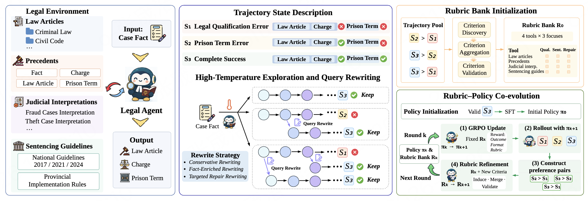
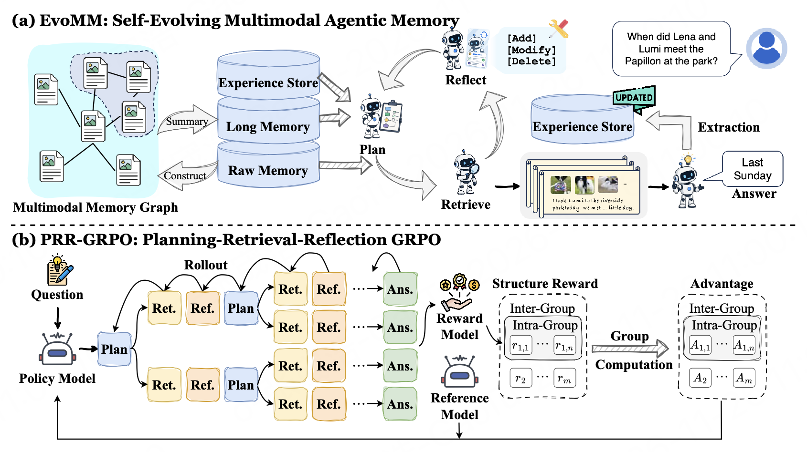
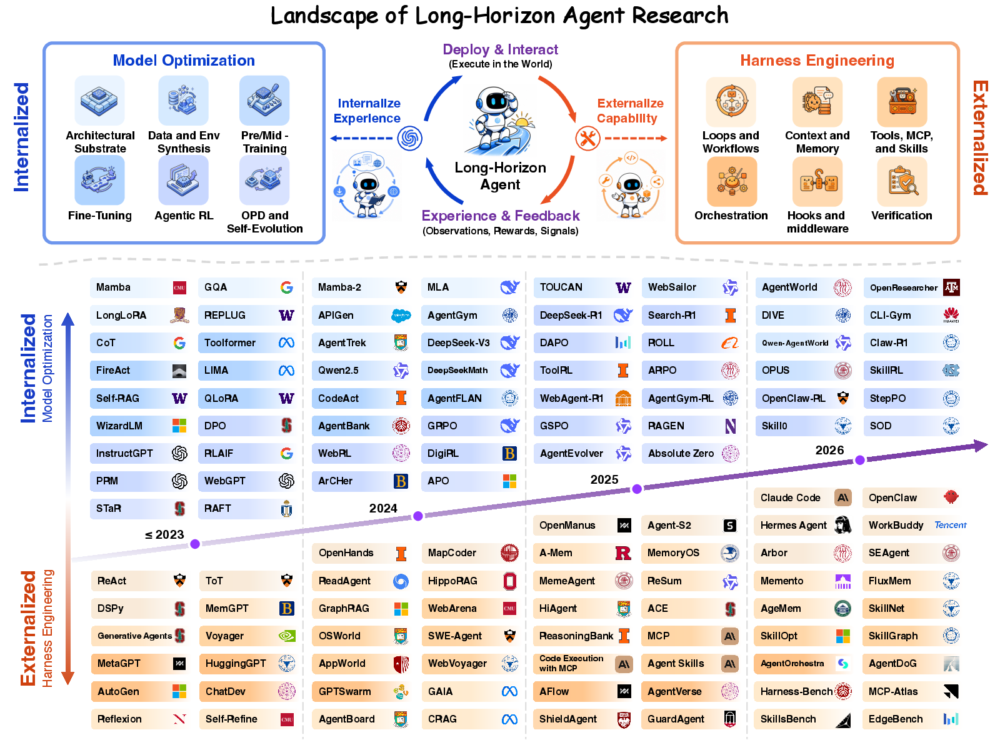
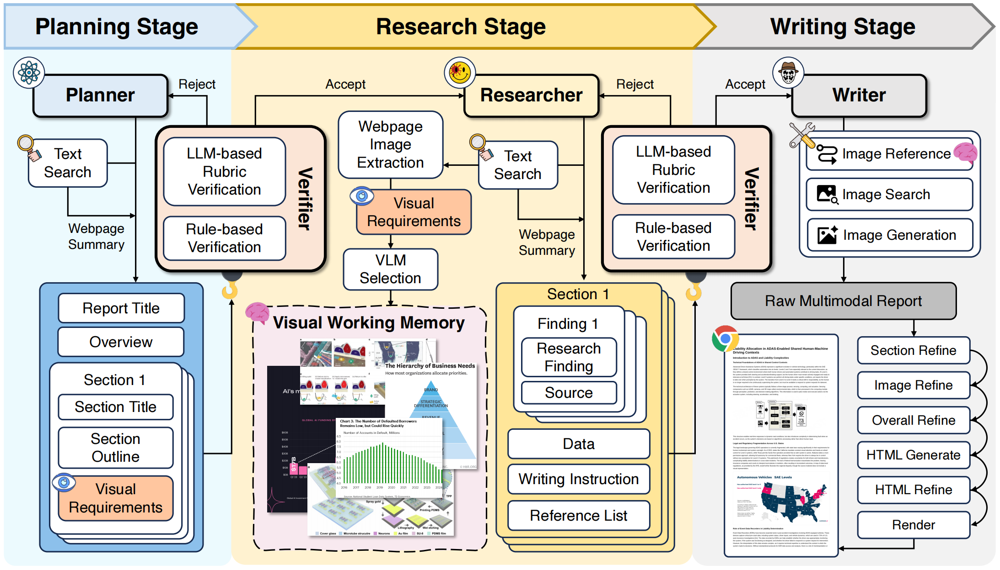
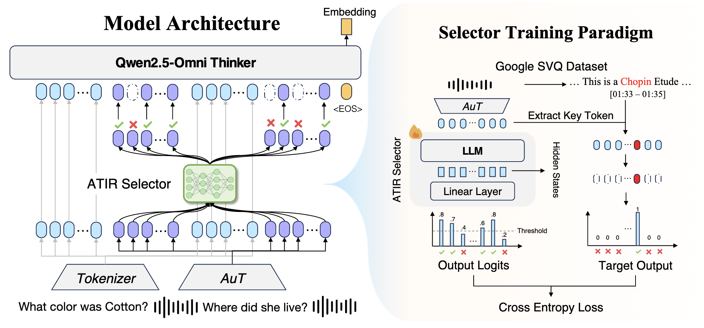
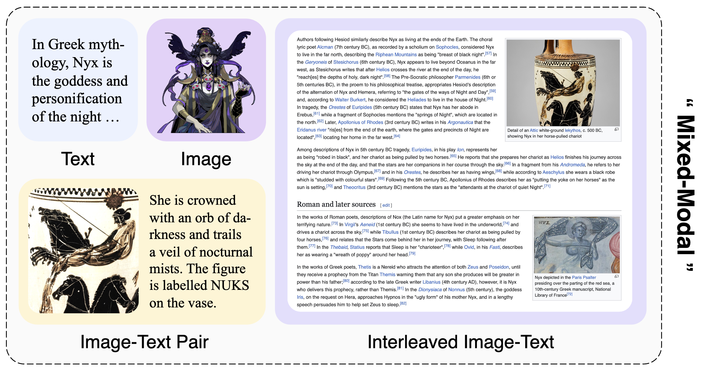
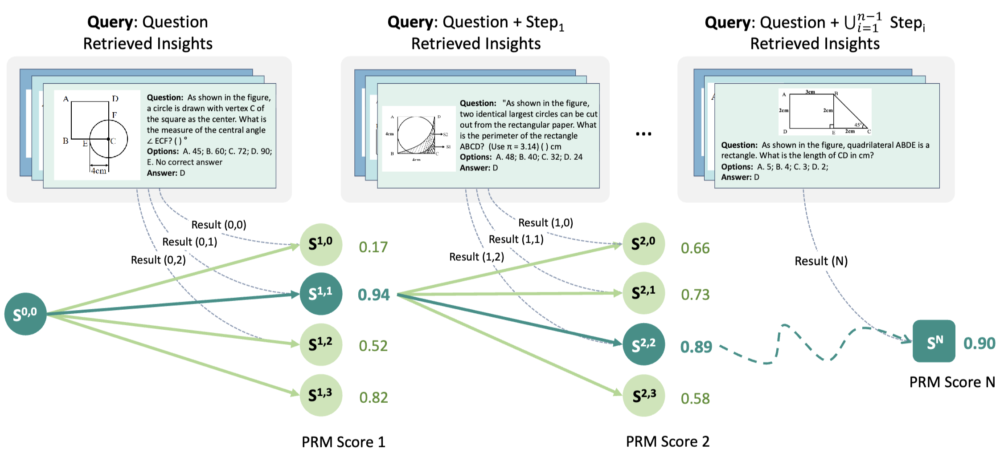
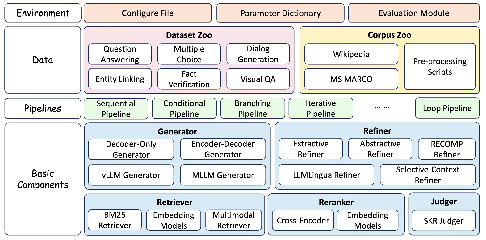
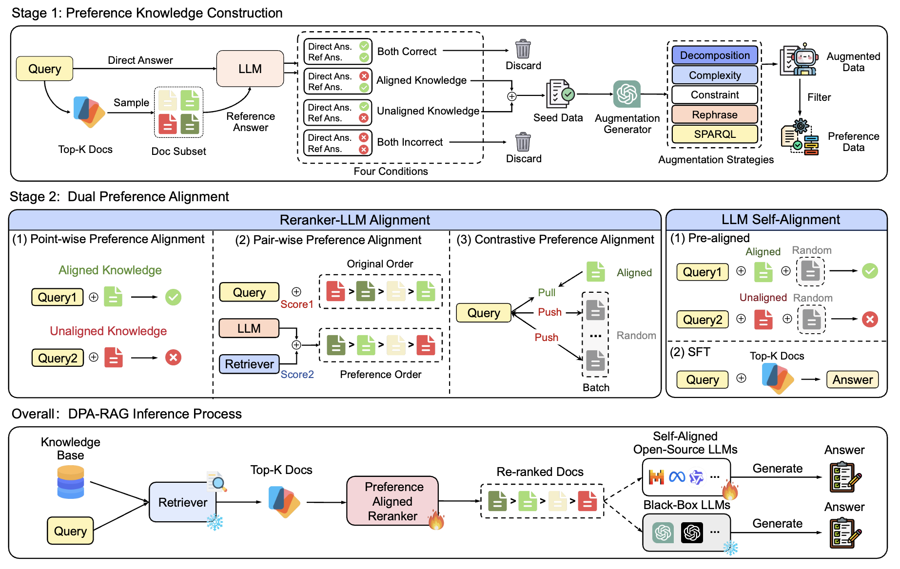
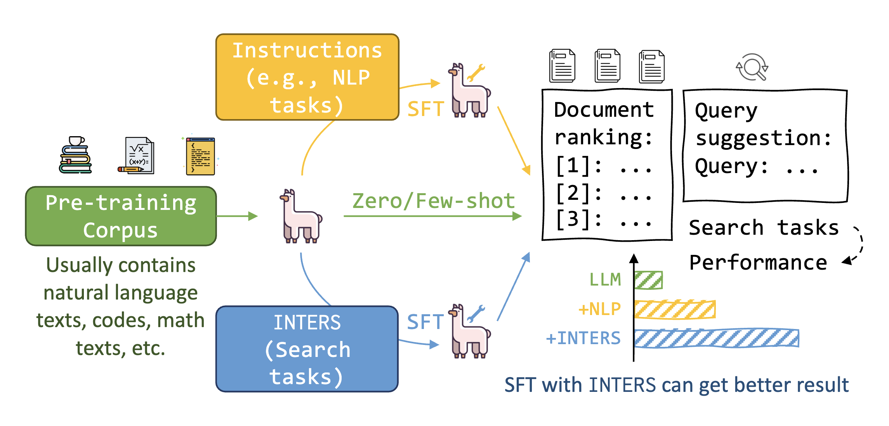

Research
I'm currently working on "auto-research" for recommandation systems. Below are my prior works, with key papers highlighted.
|
|

|
LegalEvolver: Agentic Legal Judgment Prediction via Rubric-Guided Self-Evolution
Xinyu Yang, Jiejun Tan, Chenlong Deng, Chenghao Zhang, Tongyu Wen, Zhicheng Dou
arXiv, 2026
paper |
bibtex
LegalEvolver uses rubrics distilled from search trajectories to guide reinforcement learning and iteratively improve queries for retrieving evidence in legal judgment prediction.
|
|

|
EvoMM: Reinforced Self-Evolving Multimodal Agentic Memory
Tong Zhao, Chenghao Zhang, Yucheng Tian, Yuyang Hu, Yutao Zhu, Zhicheng Dou
NeurIPS, 2026
paper |
bibtex
EvoMM uses reinforcement learning to train a multimodal agent to build, retrieve from, and revise a memory graph that connects individual turns with session summaries.
|
|

|
Towards Long-Horizon Agents: A Survey
Guanting Dong*, Xiaoshuai Song*, Yuyang Hu*, Jiajie Jin*, Chenghao Zhang*, Yifei Chen, Xiaoxi Li, Huaying Yuan, Xinyu Yang, Tongyu Wen, Jiejun Tan, Hongjin Qian, Shijue Huang, Junting Lu, Zhenyu Li, Wanjun Zhong, Yutao Zhu, Tat-Seng Chua, Zhicheng Dou, Ji-Rong Wen
Preprints
paper |
bibtex
We present a unified landscape of long-horizon agents through the co-evolution of externalized agent harnesses and internalized model optimization, connecting six key perspectives: Foundation, Evolution, Harness, Optimization, Application, and Frontier.
|
|

|
Towards Verifiable Multimodal Deep Research: A Multi-Agent Harness for Interleaved Report Generation
Chenghao Zhang, Guanting Dong, Yufan Liu, Tong Zhao, Xiaoxi Li, Zhicheng Dou
arXiv
paper |
bibtex
We introduce Ptah, a multi-agent framework for generating reliable multimodal reports with grounded textual and visual evidence, alongside PtahEval, a comprehensive protocol for evaluating their content and presentation quality.
|
|

|
ATIR: Towards Audio-Text Interleaved Contextual Retrieval
Tong Zhao, Chenghao Zhang, Yutao Zhu, Zhicheng Dou
ACL, 2026
paper |
bibtex
Audio-Text Interleaved contextual Retrieval (ATIR), a novel task and benchmark designed to bridge the gap in multimodal semantic retrieval. We develop an MLLM-based retriever featuring a unique token compression mechanism that significantly enhances retrieval performance while mitigating the computational overhead of audio sequences.
|
|

|
Towards Mixed-Modal Retrieval for Universal Retrieval-Augmented Generation
Chenghao Zhang, Guanting Dong, Xinyu Yang, Zhicheng Dou
SIGIR, 2026
paper |
bibtex |
github |
hf collection |
hf paper
We propose the innovative problem of Universal Retrieval-Augmented Generation (URAG). Along with this new paradigm, we present Nyx, a unified mixed-modal retriever tailored for URAG, and NyxQA, a corresponding large-scale mixed-modal dataset for benchmarking and training.
|
|

|
Progressive Multimodal Reasoning via Active Retrieval
Guanting Dong, Chenghao Zhang, Mengjie Deng, Yutao Zhu, Zhicheng Dou, Ji-Rong Wen
ACL, 2025
paper |
bibtex
A framework designed to progressively improve the reasoning capabilities of MLLMs through Active Retrieval (AR) and Monte Carlo Tree Search (MCTS).
|
|

|
FlashRAG: A Modular Toolkit for Efficient Retrieval-Augmented Generation Research
Jiajie Jin, Yutao Zhu, Guanting Dong, Yuyao Zhang, Xinyu Yang, Chenghao Zhang, Tong Zhao, Zhao Yang, Zhicheng Dou, Ji-Rong Wen
WWW, Short-Paper, 2025
paper |
bibtex |
github project
A Python toolkit for the reproduction and development of RAG research. Including 36 pre-processed benchmark RAG datasets and 23 state-of-the-art RAG algorithms, and 7 reasoning-based methods that combine reasoning ability with retrieval.
|
|

|
Understand what LLM needs: Dual preference alignment for retrieval-augmented generation
Guanting Dong, Yutao Zhu, Chenghao Zhang, Zechen Wang, Ji-Rong Wen, Zhicheng Dou
WWW, 2025
paper |
bibtex
A framework designed to align diverse knowledge preferences within RAG systems
|
|

|
INTERS: Unlocking the Power of Large Language Models in Search with Instruction Tuning
Yutao Zhu, Peitian Zhang, Chenghao Zhang, Yifei Chen, Binyu Xie, Zheng Liu, Jirong Wen, Zhicheng Dou
ACL, 2024
paper |
bibtex |
code |
dataset
A novel instruction tuning dataset, INTERS, encompassing 20 tasks across three fundamental IR categories: query understanding, document understanding, and query-document relationship understanding. The data are derived from 43 distinct datasets with manually written templates.
|
Services
Honors & Awards
- Beijing Outstanding Graduate, 2024
- National Scholarship, 2023
Leadership
- President, Graduate Student Union, Gaoling School of Artificial Intelligence, 2025–2026
Reviewers
- ARR Jan 2026, SIGIR 2026, ARR March 2026, ARR May 2026, ICLR 2027, WWW 2027
Teaching Assistant
- Data Structures and Algorithms, 2024 Fall
- Few Shot Learning, 2025 Fall
|
|